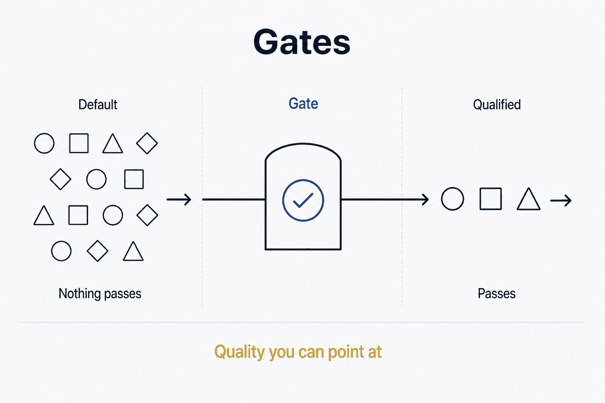

A conditional control point: nothing passes by default, it passes because it qualified — quality you can point at instead of hope spread thin.

A gate is a conditional control point in a flow: a place where something may pass only if it meets a condition. Nothing crosses a gate by default — it crosses because it qualified. That single idea, applied deliberately, is one of the most reliable ways to keep a system trustworthy, and it is worth naming as a concept because the same shape recurs everywhere once you see it.
The point of a gate is not to block. It is to make a decision explicit and located. Without gates, quality is a hope spread thin across a whole process; with gates, quality is a checkpoint you can point to. A gate turns "I trust this somehow" into "this passed there, on these conditions."
Every flow — data moving through a pipeline, an idea moving toward publication, a project moving between phases — carries things that should not continue. Bad data, half-finished work, private notes, decisions made for no good reason. Without a checkpoint, these travel downstream unchallenged and are far more expensive to catch later, when they have already spread.
A gate concentrates that judgement in one place, at one moment, on one explicit condition. Three things follow, and they are the whole reason gates earn their keep:
That last point is the deepest. A well-placed gate makes not passing the default, so an omission — a note nobody classified, a field nobody validated — is held back rather than waved through. In a rule-driven system, this is what lets you trust the output without inspecting every item by hand.
The concept is one; the forms are several. These are the kinds worth distinguishing — the coats on the rack. They share the shape (a condition, a flow, a pass/no-pass) and differ in what they guard and when they sit.
Guards what goes out. The condition is "is this ready and allowed to be seen?" — public versus private, finished versus draft, good enough versus not yet. This is the gate between a vault and a public site: only material explicitly marked public passes, everything else is held back by default. The safety of the default is the entire value here — an unclassified note stays in, rather than leaking out because nobody caught it. The gate is what makes a vault-generated public site safe to automate: you are not trusting yourself to remember, you are trusting a condition that holds every time.
Guards what moves through. The condition is a validation rule: does this data meet the contract before it may continue down the pipeline? Types match a definition, keys are present, values fall in range, referential integrity holds. Data that fails is stopped, quarantined, or flagged at the gate rather than corrupting everything downstream that assumed it was clean. The earlier the gate sits in the flow, the cheaper the catch — a bad record stopped at ingestion costs a fraction of the same record discovered after it has propagated through every model that consumed it.
Guards what moves forward in time. The condition is a deliberate decision between phases: "should this proceed to the next stage at all?" Before more time, money, or attention is committed, the gate forces an explicit go / no-go instead of letting momentum carry the work onward. This is the gate that kills work surviving only because it was already begun — the same discipline as starting with why, expressed as a checkpoint. Its value is precisely that it interrupts default continuation: without it, a project proceeds because nobody stopped it, which is not the same as proceeding because it deserved to.
All three are the same move: insert an explicit condition where things would otherwise pass by default, and make the safe outcome the default. Guard the exit (publishing), guard the throughput (data quality), or guard the transition (stage) — the shape is identical, only the what and the when change.
Seen this way, a gate is a small act of design against entropy. Left alone, flows leak: bad data spreads, private things surface, dead projects continue. A gate is where you decide, on purpose and in one readable place, what is allowed to go on. The cost is the discipline of defining the condition and placing the checkpoint; the return is a system you can trust without watching every item cross.